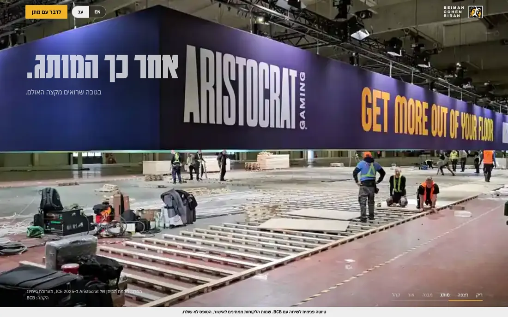
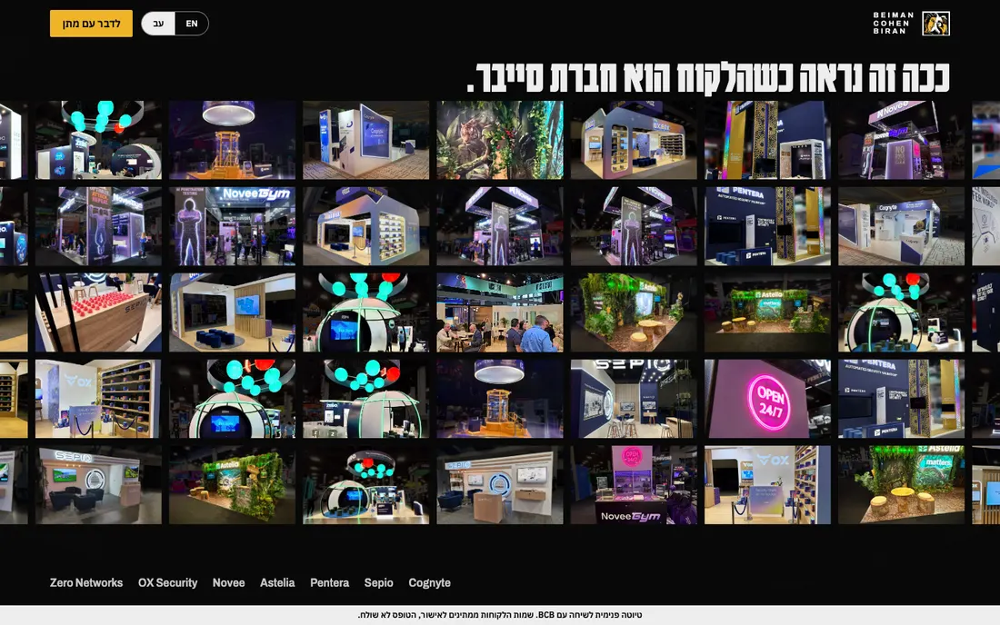
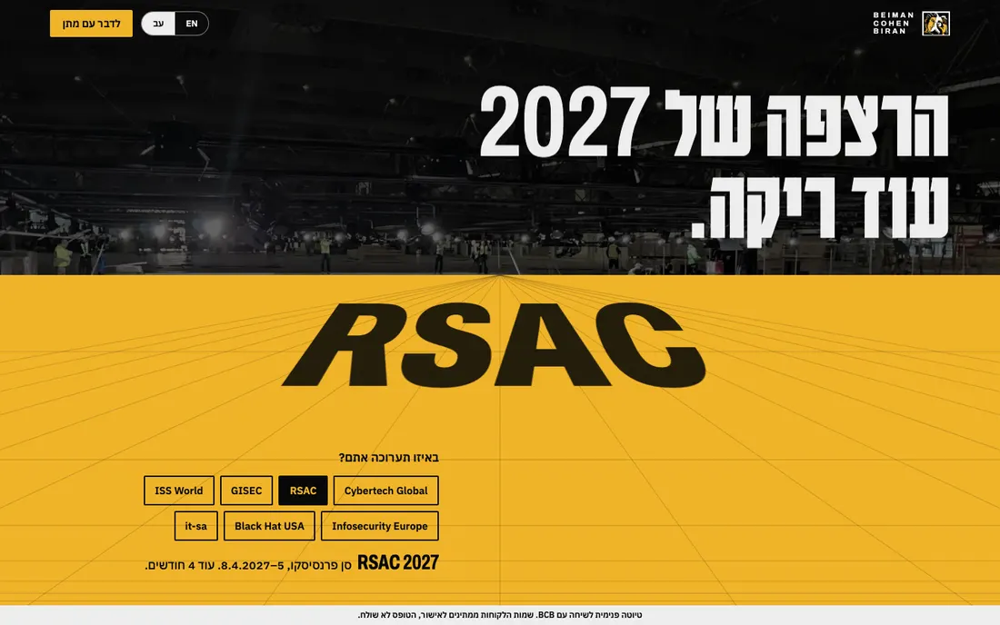
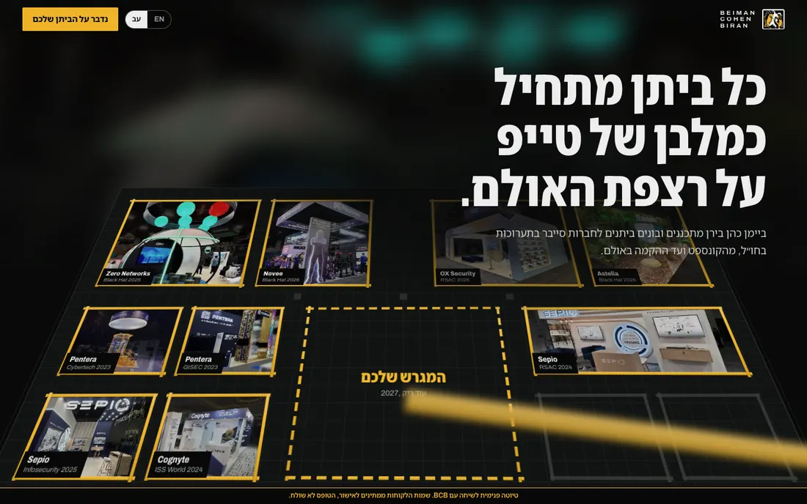
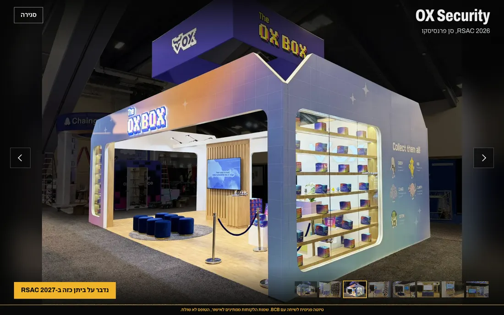
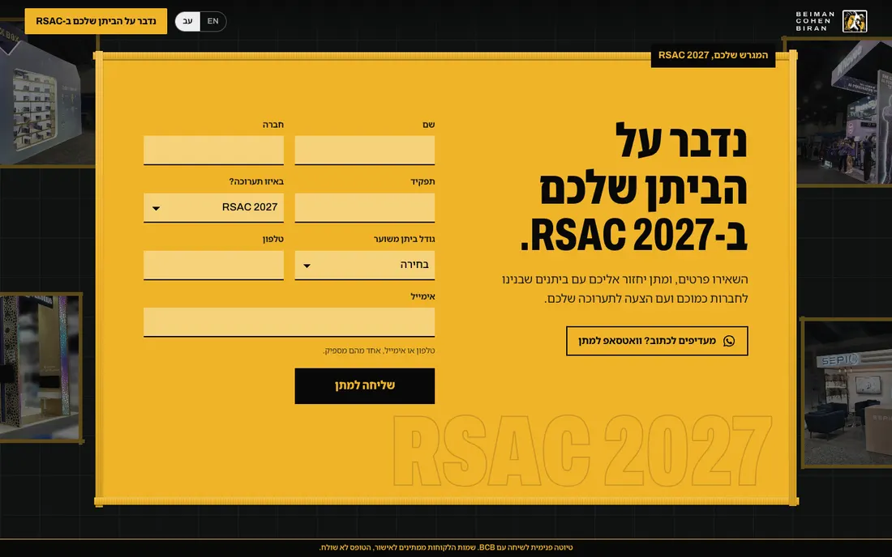
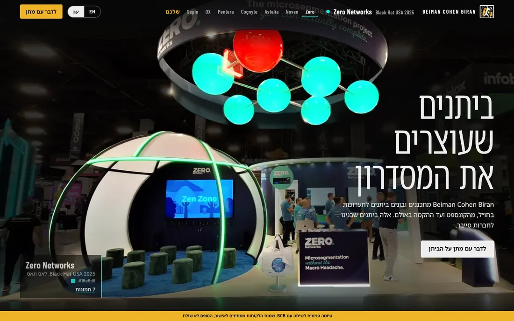
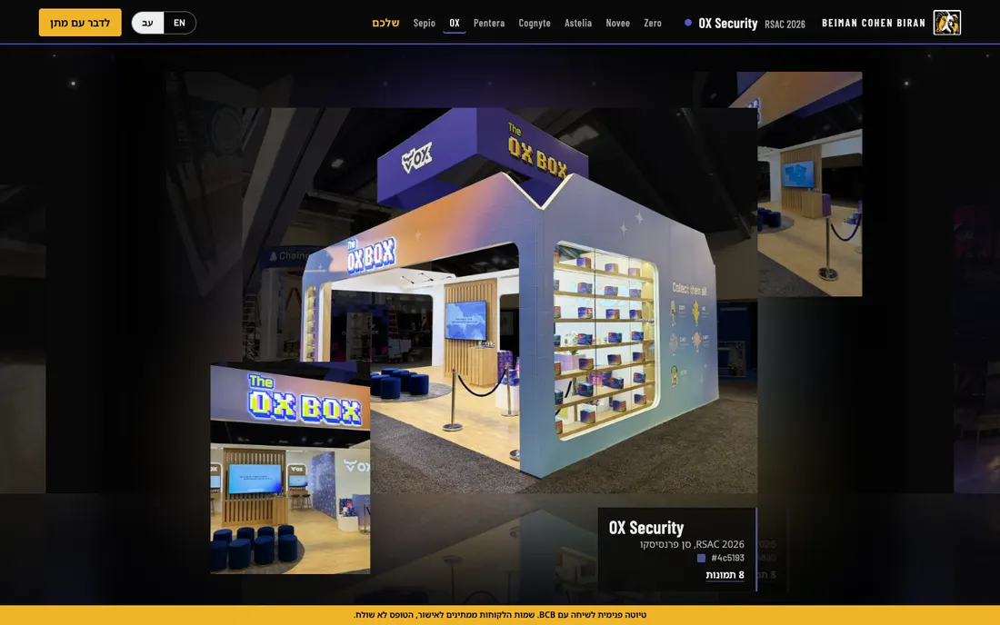
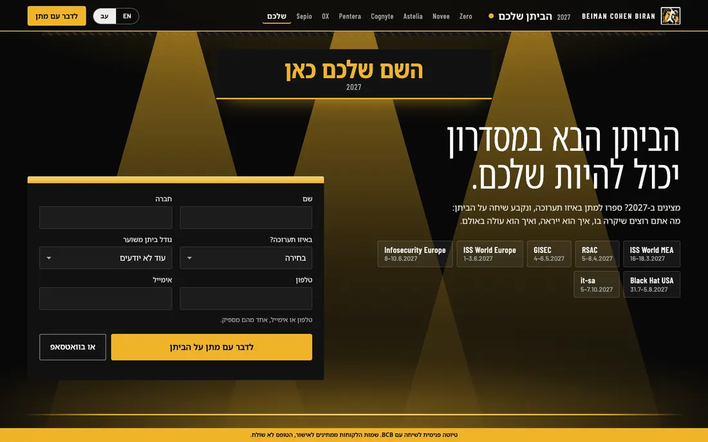

שלושה דפים חדשים, כהים, רק מהתמונות והסרטון האמיתיים שלהם. כל אחד בנוי סביב רגע אחד שזוכרים. עדיף לגלול אותם, לא רק להסתכל על התמונות פה, וגם לפתוח בטלפון.
הגלילה בונה ביתן אמיתי מהסרטון שלהם: בטון ריק, רצפה, מותג, קירות, אור, קהל. כשהקהל נכנס, הביתן מתרחק והופך לאריח אחד בקיר של 44 ביתני סייבר. בסוף חוזרת אותה רצפה ריקה, נצבעת צהוב, ושם התערוכה שלכם נכתב עליה.



ממשיך את המלבן. מפת אולם כהה בזווית, כל מגרש מסומן בטייפ הוא ביתן שהם בנו. בוחרים תערוכה, המגרשים שלה נדלקים, ולחיצה על מגרש פותחת אותו לביתן במסך מלא עם כל התמונות. בסוף הטייפ מסמן את המגרש הריק שלכם, והטופס בתוכו.



הפתיחה בנויה בשכבות מתוך התמונה של Zero: הטבעת עם הכדורים יוצאת אליכם. אחר כך הולכים לאורך מסדרון, והאור של כל הדף מקבל את הצבע של הביתן שמולכם. בסוף האורות כבים, ונדלקים מעל ביתן ריק עם השלט "השם שלכם כאן".


